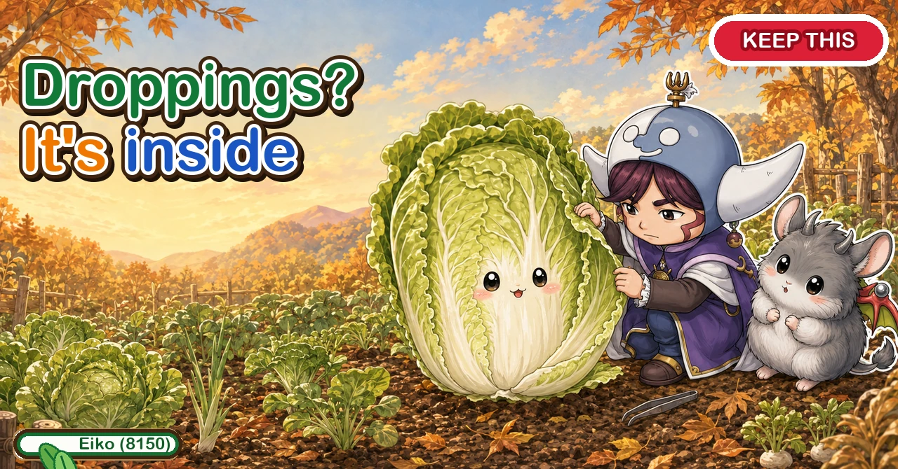
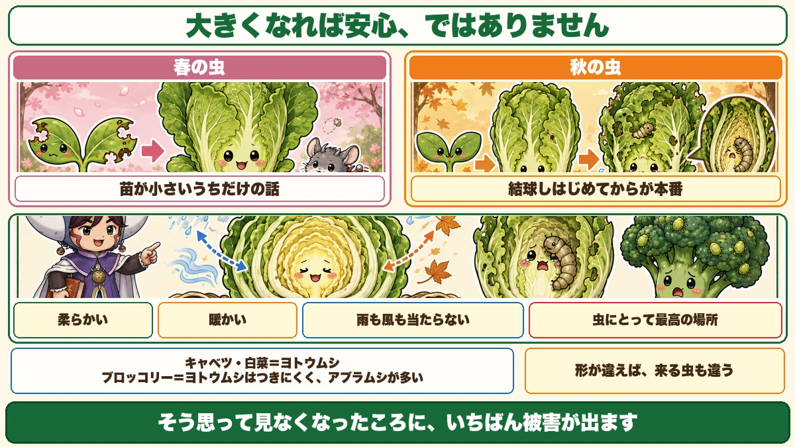
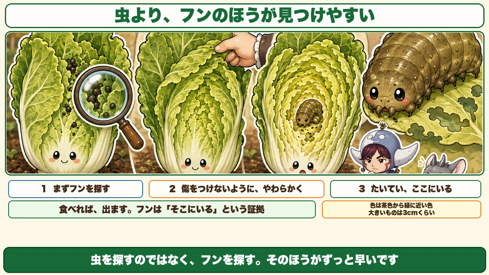
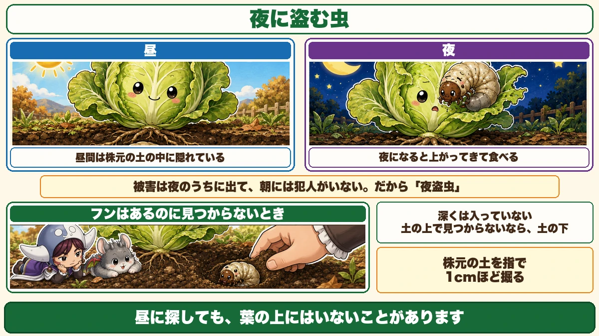
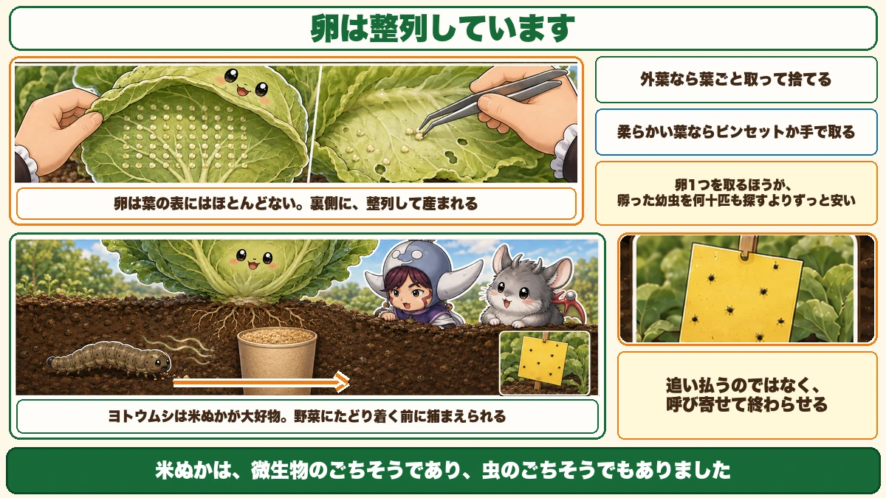

Black droppings mean it's inside the heart 🐛 Hearting up is when it starts

🐛 "It's big now, so it must be safe."
🐛 "There are black specks on the leaves."
🐛 "I've looked and I can't find anything."
Hello, I'm Eiko. Eight years of growing vegetables organically and without pesticides, and a teaching licence in science.
About spring pests I said: it only matters while the plants are small.
Autumn is the reverse.
The point, up front:
With cabbage and Chinese cabbage, trouble starts once they begin to heart.
And black droppings between the leaves mean the culprit is inside the heart ☺️
Big doesn't mean safe

What this diagram says （図解の文字）
- Big doesn't mean safe
- Spring pests — only matter while the plant is small
- Autumn pests — it starts once hearting begins
- Soft ／ warm ／ no rain or wind reaches it — the best place there is, for an insect
- Cabbage and Chinese cabbage = cutworm-type caterpillars ／ broccoli = few of those, many aphids
- A different shape brings different insects
In spring, a seedling with four leaves that loses two has lost half its photosynthesis — and once it bulks up, some grazing is harmless. That's true, for summer crops.
Winter brassicas don't work like that
Cabbage and Chinese cabbage get the heaviest attack once they start to heart.
Which is exactly when you think "it's big now, it'll be fine" and stop looking.
Why
Hearting means soft leaves gathering into a centre.
The outer leaves are tough and exposed to wind. Inside the heart it is soft, warm, and out of the rain and wind.
For a caterpillar there is no better address.
Different crops, different insects
- Cabbage and Chinese cabbage — the night-feeding caterpillars
- Broccoli — few of those, and a great many aphids
Broccoli doesn't heart, so there's nowhere to hide. A different shape brings different insects.
Look for the droppings

What this diagram says （図解の文字）
- Droppings are easier to find than the caterpillar
- 1 look for droppings first ／ 2 peel the leaves back gently, without damaging them ／ 3 it's usually right here
- If it eats, it produces. Droppings are proof it's there
- Colour from brown to near-green ／ the big ones are about 3 cm
- Don't look for the insect; look for the droppings. It's far quicker
Finding the caterpillar itself is genuinely difficult — it's the colour of the leaf and it's hidden.
There's an easier route: look for black specks lying between the leaves.
Droppings mean it's in the heart
This is reliable. Droppings between the leaves mean it's in the growing point, inside the heart.
If it eats, it produces. The droppings are the evidence.
How to find it
- Peel the leaves back one at a time, gently — force snaps the outer leaves
- Go all the way in to the soft heart leaves. Don't stop halfway; it's deep
- Look at the very centre. It's usually there, chewing the softest leaves
What you're looking for: brown through to near-green, and the big ones are about 3 cm. Sizeable — once you see it, it's unmistakable.
Day and night, different places

What this diagram says （図解の文字）
- The insect that steals at night
- Day — hidden in the soil at the base of the plant
- Night — it comes up and feeds
- The damage happens overnight and by morning the culprit has gone
- When there are droppings and no insect — dig about 1 cm at the base with a finger; it isn't deep
- If it isn't above the soil, it's below it
The Japanese name translates as "night-stealing insect", which is exactly right.
By day it's hidden in the soil at the base of the plant. So a daytime search of the leaves can find nothing.
At night it comes up and feeds. The damage appears overnight and by morning the culprit is gone.
Droppings but no insect
Common. When it happens: dig about a centimetre into the soil at the base of the plant.
It isn't deep. By day it is always in the soil. Same as cutworms, which curl up just under the surface.
If it isn't above the soil, it's below it.
The eggs are laid in rows

What this diagram says （図解の文字）
- The eggs are laid in rows
- Almost never on the upper surface — on the underside, in neat ranks
- On an outer leaf, take the leaf off and bin it
- On a soft leaf, lift them off with tweezers or fingers
- Removing one egg is far cheaper than hunting dozens of hatched larvae
- They love rice bran. You can catch them before they reach the vegetables
Eggs are almost never on the upper surface of a leaf. They're underneath — laid in neat ranks, as if arranged. Completely distinctive once you've seen it.
What to do
- On an outer leaf — take the whole leaf off and bin it. One leaf costs nothing; leaving the eggs costs plenty
- On a soft inner leaf — scrape the eggs off with tweezers or fingers and keep the leaf
Ask which is easier: removing one cluster of eggs, or hunting dozens of hatched caterpillars.
With aphids the rule was "deal with a few". Eggs are the step before that. The habit of turning leaves over is the single most effective thing.
And clear the droppings
Once you've taken the caterpillar, take the droppings too — with tweezers, or wash them off with a watering can.
Honest reason: you won't want to eat it otherwise. Finding droppings scattered between the leaves at harvest is dispiriting.
The rice bran trap
A trick worth knowing: fill a paper cup with rice bran and sink it at the base of the plant.
- Take a paper cup or a slightly larger container
- Fill it with rice bran
- Dig a hole at the base of the plant and sink it so the rim is level with the soil
Why it works
These caterpillars are extremely fond of rice bran. The smell and taste pull them towards it — so you catch them before they reach the vegetable.
To sum up
- ✅ Spring pests matter while plants are small; autumn is the opposite
- ✅ The heart is soft, warm and sheltered — the best place for an insect
- ✅ Cabbage and Chinese cabbage get caterpillars; broccoli gets aphids
- ✅ Droppings between the leaves mean it's in the heart
- ✅ Look for droppings, not the insect
- ✅ Peel the leaves gently all the way to the centre
- ✅ Brown to near-green, up to about 3 cm
- ✅ By day in the soil, at night on the leaves
- ✅ Droppings but no insect? Dig 1 cm at the base
- ✅ Eggs are on the underside, in rows
- ✅ Outer leaf: bin it. Inner leaf: scrape them off
- ✅ One egg cluster beats dozens of caterpillars
- ✅ Clear the droppings too
- ✅ Rice bran in a sunken cup catches them before they arrive
You don't have to do all of it. Pick one plant and look between the leaves for black specks. If they're there, so is the caterpillar 🐛
Thank you for reading!